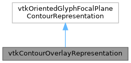

|
MUSICardio 4.2
MUSICardio application created by Inria Epione, IHU LIRYC and Université de Bordeaux
|
Loading...
Searching...
No Matches
|
MUSICardio 4.2
MUSICardio application created by Inria Epione, IHU LIRYC and Université de Bordeaux
|


Public Member Functions | |
| vtkTypeMacro (vtkContourOverlayRepresentation, vtkOrientedGlyphFocalPlaneContourRepresentation) void UpdateContourWorldPositionsBasedOnDisplayPositions() override | |
| vtkSetMacro (needToSaveState, bool) vtkGetMacro(needToSaveState | |
| bool void | Initialize (vtkPolyData *polyData) override |
| void | WidgetInteraction (double eventPos[2]) override |
| int | ComputeInteractionState (int X, int Y, int vtkNotUsed(modified)) override |
| ComputeInteractionState is called when the mouse hovers a slice with a vtkContourRepresentation. Change the cursor shape at hovering of a point. | |
| int | DeleteLastNode () override |
| int | DeleteActiveNode () override |
| int | DeleteNthNode (int n) override |
| void | ClearAllNodes () override |
| int | AddNodeOnContour (int X, int Y) override |
| int | AddNodeAtDisplayPosition (int X, int Y) override |
| int | AddNodeAtDisplayPosition (double displayPos[2]) override |
| int | GetNthNodeWorldPosition (int n, double worldPos[3]) override |
| int | GetIntermediatePointWorldPosition (int n, int idx, double point[3]) override |
| int | FindClosestPointOnContour (int X, int Y, double worldPos[3], int *idx) override |
Static Public Member Functions | |
| static vtkContourOverlayRepresentation * | New () |
|
override |
ComputeInteractionState is called when the mouse hovers a slice with a vtkContourRepresentation. Change the cursor shape at hovering of a point.
| X | |
| Y | |
| vtkNotUsed |